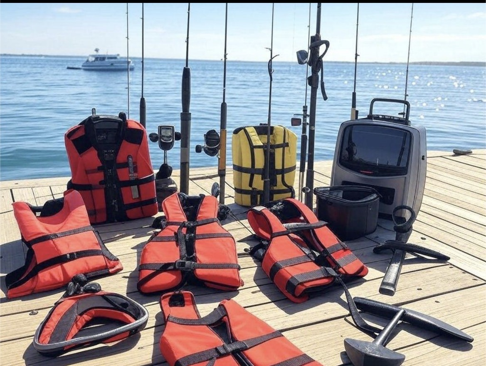
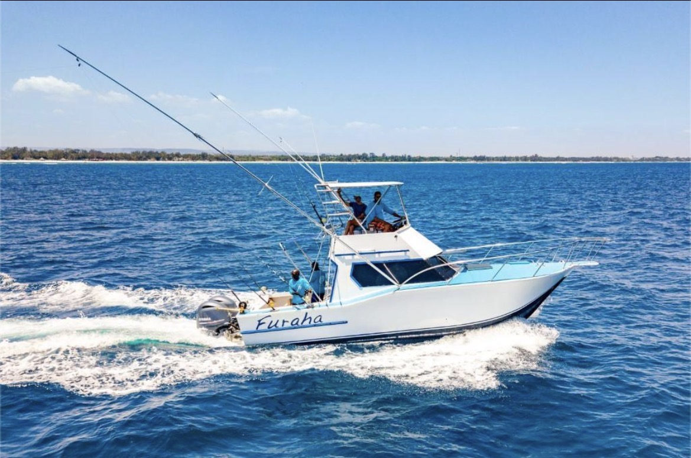
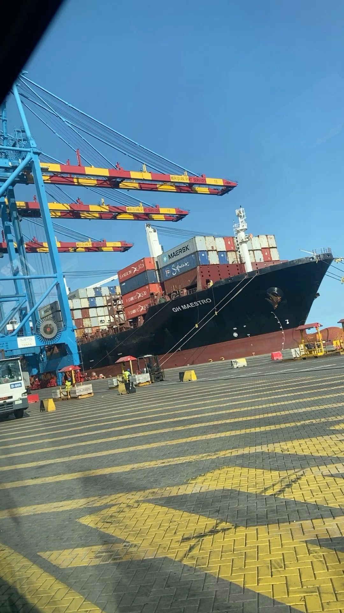
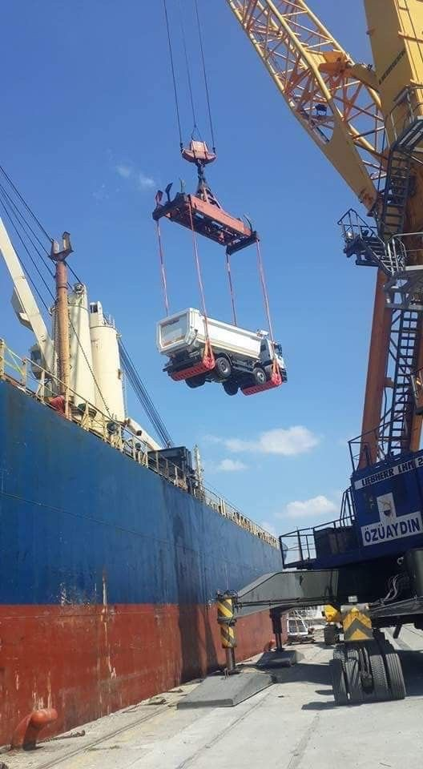

1. Marine Equipment
Marine equipment includes life jackets, lifebuoys, ropes, navigation tools and other supplies used to support vessel safety and daily maritime operations.
Reliable Solutions for Maritime Operations
Kenya Marine Supplies Ltd provides information about marine equipment, transportation, cargo shipping and port operations. Explore the products and activities that support the maritime industry.

Marine equipment includes life jackets, lifebuoys, ropes, navigation tools and other supplies used to support vessel safety and daily maritime operations.

Marine transportation moves passengers and goods across water using ships, boats and other vessels. It supports trade and transport.

Cargo ships carry containers, machinery, food and other goods between ports. Shipping is an important part of international trade.

Port operations involve loading and unloading cargo, handling containers and coordinating activities that help vessels operate efficiently.
Safe equipment, proper maintenance and efficient cargo handling are important to the maritime industry. Our website introduces visitors to these activities and the equipment associated with them.
For more information, please visit our Contact page.